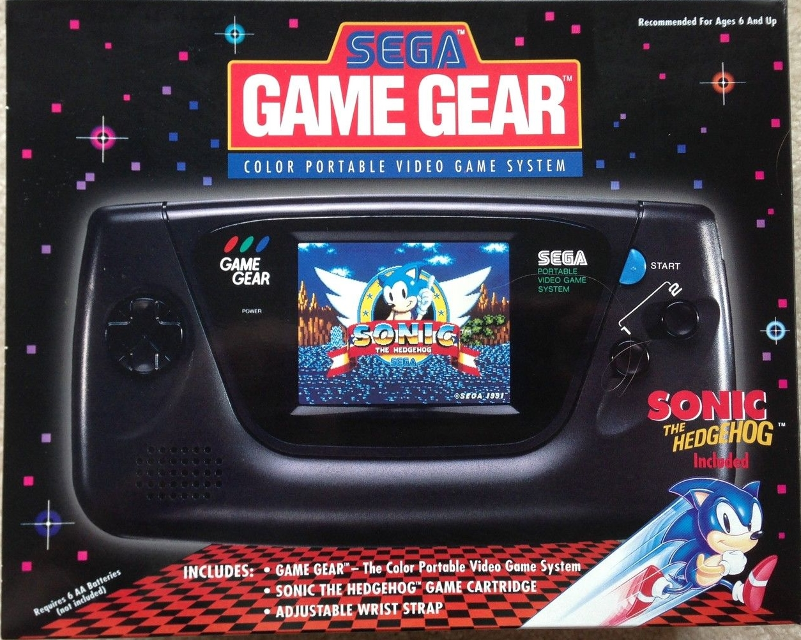

<
Videoconsola portatil creada en respuesta a la Game Boy. Es la
tercera portátil con pantalla en color de la historia. La Game Gear
fue básicamente una Master System portátil con menor resolución
pero que permitía una paleta de colores mayor, y potencialmente
mejores gráficos. Además podía producir sonido estéreo, aunque muy
pocos juegos fueron programados con tal innovación.
Uno de los juegos más vendidos fue Sonic the Hedgehog.
>
